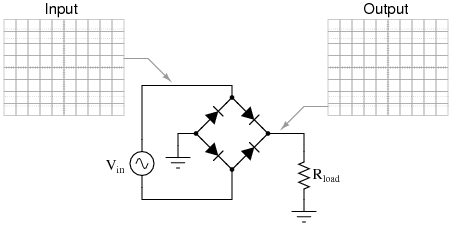

POWER
Have you tried turning if off and turning it back on again?
What is power?
noun:
- The ability to do something or act in a particular way
- The capacity or ability to direct or influence behavior
verb:
- Move or travel with great speed or force
What is electrical power?
Time-rate of doing work.
wait...WHAT?
Close, it's a Watt
Step back
Charge (Q)
- "Quantity of Electrons"
- Actually a "measure of charge"
- Coulombs
- conceptually similar to mass, "a quantity of stuff"
Electric Field (E)
- Electrical Field just like Gravitational Field
- Everything wants to go "down"
- Well, for an E-field, everything wants to go 'positive' but same thing
Current (I)
- Flow of electrons
- charge per unit time, Q/t
- Amperes (A)
Work(W)
- (uhhh....)
- A force exherted through a distance
- (Opposing) charges separated in an Electric field
- Just like masses separated in a gravitational field
- QxExd, measured in Joules.
Voltage (V)
- Work done per unit charge W/Q
- A voltage is a Potential Difference
Further step back
Force
- Mass x Accelleration F = ma
- push or pull measured in Newtons (N)
- What is the acceleration from though? it's not from the force if we are defining "Force".
- It comes from the position of an object in a field, relative to another object.
- with attraction of mass, it's the gravitational field, the field which exists all around every object.
- Tendency to gravitate towards one another
- The Gravitational field is the term for the existence of gravity at every point in space, including a vacuum.
- It is specifically an energy field
- Different positions in the field mean different levels of energy, specifically potential energy
- A rock up high has more potential to do damage than one on the ground.
Work
- Force over a distance Fxd
- e.g. push a rock up a hill
- Measured in Newton Meters (Nm) or Joules (J)
Stop here for a sec
- What's happening when you push a rock up a hill?
- The Force of Gravity is pushing down and you are pushing up.
- The rock is being loaded with energy by you doing work (moving a mass against an energy field through a distance)
- Your work is adding energy to the rock by moving it to a higher level, higher relative to the gravitational field
- ...Specifically you are increasing the potential damage done, not the actual damage done, by the falling rock.
- ...That potential energy is stored in the rock's height, it's distance along the gravitational field.
- ...Distance relative to the potential of the rock doing damage from the ground
- ...Ground meaining the lowest energy state in the system. The rock can't do anything when it's at the lowest possible point.
- ...Releasing that energy will convert the potential energy to kinetic energy, the energy of movement,
- ...Movement is the release of the stored work during a given period of time..which is power
- ...The rock falling from a certain height will gain power because of the pull of gravity acting over a period of time. Obviously if gravity stopped acting, the rock would stop gaining power, but it would continue to move.
- Note that, until the work was released, time didn't matter. In reality time to charge does matter, but when talking about a system, it's typical to think of having an already charged battery, for example.
So the difference in the potential energy (W), a.k.a. the release of energy stored in the rock's location relative to the ground, is equal to the work performed to get the rock there.
W = (MxG)xh
h is the height separating the mass (M) from the ground in the gravitational field (G)
For electrons:
W = (QxE)xd
d is the distance separating the charges from the lower electrical state (ground) in the electric field.
Energy
- Stored work
- e.g. The potential lethality instilled in a rock by pushing it up a hill.
- Force x Distance, also measured in joules (J)
- Money In The Bank
Voltage
- Work per unit charge V = W/Q
- V = W/Q = (QxExd)/Q = Exd so V = Exd
- Since work is energy, specifically stored energy, this is the amount of stored energy per electron
- Each electron in that "position" in the field contributes an "electron volt"
- Position doesn't mean literally a point is space, but relative to another specific point of field intensity
Power
- Oh, uh, right, we were discussing power.
- Work done per unit time
-
- but since V = Exd,
- P = VxQ/t
- Q/t is amps, since I = Q/t sooooooo
- P = VxI
- It takes energy to clump electrons together in one place, they dont want to be near each other
- That energy is stored, it was the result of doing work
- Releasing that energy in a specific time frame is power
- Current implies a flow of electrons in time
- Voltage corresponds to the concept of A "push" and a "how far"
- Power is "pushing (E)" "something(Q)" "some distance (d)" "for some time(t)"
Electrical power is the change ixins the work (change in energy level) of electrons moving through an electrical field. That's it. It's the presence of an Electrical Field, and electrons at a difference in energy in that field (strength of field x distance) between two levels, the bottom typically referred to as ground.
Water Wheel
https://www.youtube.com/watch?v=0Y0A5yQO9eY
Water is a wonderful analogy for electronics.
Non-trick, very obvious question: What is analogous to electrical current here?
What about voltage?
Work?
And where is the energy going?
What can stand in for Q?
So how much power is this wheel generating? Fd = Mad ?
Note:
- The water isn't consumed, it continues to flow, the amount of water, or charge Q, is constant.
- The mass of the water and the force applied over the difference in height of the wheel defines the work being done.
- How fast the wheel will spin, the change in work per unit time, is also how fast the water will flow.
- What if the wheel were bigger? smaller?
- The flow of water is determined by the mass of the wheel. The voltage doesn't change, so what is changing?
- V=IR, P = V^2/R
- Resistance here is mass of the wheel. the bigger wheel literally resists the flow of water
- Does the amount of power consumed change?
- The amout of energy consumed per unit time does change, it increases, so yes, the power consumed by the wheel increases for a given time period
- Does the amount of water change?
- no, it cant. The total amount of charge available is not influenced by the wheel size.
- What changes is how much water is required to spin the wheel. A bigger wheel needs more water, specifically more water flow, or more water per second, or more current, to spin as fast as before
- But again, the water does not disappear, it merely flows through the system from a high level to a lower level. It releases energy, stored work, into the wheel.
Power is a system
- While we talk about power in terms of VI consumed by a component, Power is not about one component
- A battery of a specific voltage has a specific amount of charge, Q, and can only emit a portion of that Q per second, Amps.
- The amount of time it takes to fully discharge all Q on a per-hourly basis is called an Amp-hour (Ah).
- The amount of power available is the Watt-hour
- For building a DC circuit, you want to know the voltage you need, and the current it uses, then you pick a battery capable of that power (VI) which contains enough charge (Q) to provide your desired Amp-hours or Watt-hours of operation.
Example
I want to power 10 dot-stars (5V 30mA max) for 24 hours.
10 * 5V * 30 mA * 24h = 36 Watt-hours
Note that this has nothing to do with circuit topology, aka, how the LED's are hooked up.
Series: (10 * 5V) * 30mA * 24h = 36 Wh = 0.72Ah at 50 Volts
Parallel: 5V * (10 * 30mA) * 24h = 36 Wh = 7.20Ah at 5 Volts
Can't fool mother nature.
Where does power "go" then?
- Work
The thing we want done, spinning a motor, computation, signal processing, etc
- radiation
EM (infrared, light, rf..)
- Heat
Electrons moving through a conductor will jostle other atoms and nuclei, which generates heat. The energy is imparted onto these impeding objects.
This is how a resistor dissapates power.
Power is consumed, or dissapated, as it is transferred to other objects in the system. As the water flows down, and carries the potential energy with it, and transfers that energy to other objects. At the bottom of the system, the water still flows, but it's potential energy has all been converted. That flow of water cannot do more work.
- If you are confused, don't be.
- Power is Voltage multiplied by Current
- But it's also all that other shit.
- But you only need to track three things:
- Voltage and current are factors of the design of the circuit. To do X, you need V and I.
- Power is defined then. You need to supply it, for a certain number of hours, or years, but it's a design requirement
- Heat can kill a design. Compute the heat for a 5x200 grid of 5V 30mA LEDs and you'll melt solder (i've done it)
- The whole point of the above is to prove to you that you can understand it, so it can be a thing you know you can pretty much ignore. Design some things then try to power them. Once you get a feel for it, it will be a part of your process.
- I's very NOT complicated. If you think you are doing something amazing, either the battery doesn't exist or you are going to melt something. Design that thing anyways though
- Design your circuit, be aware of heat, and then try to find the power supply that will work for you. Size and capacity are the two main tradeoffs that aren't cost.
Power Electronics
Sources
Electro-Mechanical Generators
- Motor in reverse - Magnets, E and B fields
- Water
- natural movement like river or waves
- artificual potential differences like dams
- Fire
-
- Wind
results in AC - fundamentally, something is spinning
Radiative
DC
Energy Density - Watt Hours / size Discharge rates - flatter / constant / consistent dischrage rate is generally better.
Lithium Batteries
- Lithium Ion (Li+, Li-ion)
- 3.6 or 7.2 volts
- higher density than LiPo
- Lithium Polymer (LiPo)
- 3.6, 7.2 volts
- slightly better capacity than Lithium Ion
- Lower Weight, good for drones or phone, credit-card sized electronics
BEWARE OF THE BULGE
- Charging
- DANGER Very Specific requirements
- SLIGHTLY LESS DANGER Protection circuits (CPB/CPM)
batteryuniversity.com
Solar
- Reverse LED
- Light incident on special material that loses electrons easily
- Voltage difference forms, current flows, get power
- Relatively inefficient, but still powerful, sufficient to charge LiPos
AC
Generators - Something is mechanically moving, usually causing a big magnet to move through a conductive coil. - Movement is necessary to generate a flow of electrons. - Movement creates a constantly changing potential differences with which the electrons keep up. - Without movement, the electrocs are static, and there is no flow electrons.
The physical work is transfered to electrical work, electrical energy.
Power - AC power is not like DC power. DC power "sets up" and then kind of stays there. - AC introduces a new element, frequency. - Circuits behave differently when using different frequencies of input. - For power, the best input is DC. How to ..trasform..err..rectify that...er...convert..wait...
Circuits and Components
Transformers, rectifiers, regulators, converters, amplifiers
Inductors
- "induce" a flow of charge via an input magnetic field, or vice versa.
- Coil of a conductor
- A magnetic field oscillating through a conductive coil createsa a flow of electrons.
- Why?
- Well, there's why, and then there's why. This is just how electrons interact with magnetic fields.
- things fall towards the center of mass
- electrons move in the direction orthoganol to the change in magnetic field.
- orthogoal to - right angle to, but with more dimensions. right hand rule
- Magnetic field in one device induces field in another device.
- The field's are the same strength
- Specifically, we know that the Power is the same
- Power in = Power out
- Always! Newton's 2nd law of thermo-dynamics. Heat is power!
- If the inductors are the same, then the voltage and current in and out are the same,
- Power is transferred by the electro-magnetic field
- if they are NOT the same, it's by "turns" i.e. the number of turns of a coil
- How do turns make a differece?
- Each turn is like an antenna receiving the field and emitting eletrons
- Every turn is another antenna
- Each antenna is connected in series
- A bunch of same things in series implies higher voltage, lower current, always
- So if a send VI in froma 10 turn inductor to a 20 turn inductor...
- Which will have a higher voltage?
- Which will have a higher current?
- P = P, so VI = VI
- These things are literally magic.
- EM is a fundamental force of the universe, the other is gravity.
- This coil of wire is manipulating that force in a very non-trivial way.
- It's just a coil of wire!
Capacitors
Capacitors have the "capacity" to store charge a.k.a electrons. Kind of like tiny batteries.
- buckets of electrons
- If there is a dip in the flow, these electrons can be used to maintain the line current/voltage
- ...until the flow is restored, ..or they run out.
- ...Kind of. As one electon leaves, the voltage goes down by one electron, lowering the total field.
- Stabilize power lines/rails by "filtering out" dips.
Diodes
Two Odes. DiOdes. ok, two electrodes.
- Electrons can only flow in one direction, or "asymmetric conductance"
- How?
- p-n junction is set up to resist flow
- "doped" materials for p and n side
- creates a static E-field which must be over come before flow in other direction.
- Kind of like a capacitor that has to be "drained" first.
Rectifier Circuit
- Rectification in electronics means a fairly specific thing:
- Make something go in the desired direction.
- 99% of the time it's 4 diodes.
- 2 sets of 2 diodes in series, connected in parallel
- By grounding the middle of the rectifier, an AC current is forced to flow in one direction.
- all this does is flip the sign of the negative voltage, take the absolute value if you will.
- The cost is the energy consumed by the 2 diodes active any time.
- The universal footprint of a rectifier is
- right next to the transformer output
- 4 things. Maybe 4 diodes in a regular pattern, maybe an IC with 4 pins (that contains the rectifying diodes)
- Will most likely lead into a capacitor network and a regulator
- rectifiers generally lie right next to the wall power, transforming it from positive/negative to positive positive.

Regulators
Regulators keep things the same, in some sense,as in a specific value, or range-bound.
- Reference
- Some input which indicates a desired output level.
- can be a voltage or current created by a resistor network.
- Sampler
- senses output voltage, perhaps using a known, large resistance to induce a current
- Comparator
- compares the sample to the refernse and feeds that into the controller
- Controller
- Determines if the output neets to be restricted or not
- Linear regulators
- Inefficient
- Basically a voltage divider, two resistors.
- Where's all that power going???
-
- Can't raise voltage about input level
- Switching
- efficient, minimal waste means minimal heat
- "switches" device on and off
- generate higher voltages, or even opposite polatity
- How this magic?
- Operational Amplifiers
- These are the holy grail of understanding components.
- I am considering a class on thses but not sure. more value from understanding microcontroller
- Maybe add a class after, discuss then.
The regulator senses the delivered line voltage/current and either releases or restricts the supply to keep the output constant.
Can be used to change the voltage level as well. The transformer may yield 12V but we want 5V.
Converters
Handles changes in voltage levels.
- Can step up or down, though generally output current is limited, even when stepping down.
- Different types
- Boost (Step up)
- Buck (Step down)
- Inverting
- flyback - Boost/Buck with isolating transformer
- Can be AC/DC or DC/DC
- includes internal rectification
- When building circuits that need different voltage levels
- wether to convert up or down depends on the needs of the circuit and the efficiency of the conversions.
- Go read about them so you know what's available.
- Multiple outputs
- positive / negative
- current ratings
- purposes
- Logic level converters
- bus adapters
- adjustables, remote on/off etc.
Amplifier
Power amplification means adding Voltage, Current or both to a circuit.
- With amplification,you generally have access to the voltage levels you want with a sufficient supply of current
- You are just trying to increase the power of some other signal / circuit up to that level.
- One method of exchanging voltage for current was the transformer, but the power did not increase.
- Another was a boost converter, but that didn't increase the power
- So, when talking about adding power to something, generally we are going to take some signals, like audio, and boost it's output.
- Why are we adding more power?
- Well, we want to release more energy somewhere else.
- Specifically with audio, we want to move a large magnet so it pushes large volumes of air are pleasant, repeating intervals.
- A very common amplifier is a Push-Pull amplifier
- It pushes
- ...Then it pulls.
- which makes sense, the signal is oscillating, so to s t r e t c h it, we push in one direction, and pull in the other.
Reference
- Required to know when to push and when to pull, we need some reference, above which we push, and below which we pull.
- Ground! ground is a always a good referense point
- but that means we have voltages which will go below ground!
- These are negative voltages. Remember, voltages are relative differences they are not absolute numbers
- My 10, 5, 0 is someone elses 5, 0, -5. It's the same circuit.
Power Transfer
- The short story is that only half of the generated power will flow through the amplifier
- Need to generate twice what is needed:
- 1/2 to energize the signal for the work we want done
- 1/2 to power the circuit to do that job.
- wait, if only 1/2 goes to the load...
- HHEEAAATTTTTT
- Yeahh, you're going to need to control heat.
- We went over various heat issues prevoiusly but this is different, you need to pull a lot of heat from the components out of the case as fast as possible.
- heat sinks pull heat from component
- substances can lower the thermal resistance between materials like thermal paste
- Lower thermal resistance means greater thermal conductance, i.e. heat flow.
- Heat will flow through the heat sink from it's contact surface to it's edges
- More edges/surface area, the more heat can exchange with air, hence all the fins
- air flows across the heat sink's surface area, removing heat through conduction
- Air moves away from the head sink, and dissapates heat through convection
- Physical properties of materials determine how much power can be dissapated in a givem time frame.
- Any heat not disappated is retained, possibly to the point of melting the device.
Gain Clone
http://www.circuitbasics.com/design-hi-fi-audio-amplifier-lm3886/
- A gain clone is a DIY version of a $3,000 amplifier called the Gain Card. Costs about $200, maybe less.
- Someone opened up the commercial version and just duplicated it.
Let's just dig through this.
HIGHLY suggest reading through this - great design process - great result - a really great DIY project covering analog circuitry.